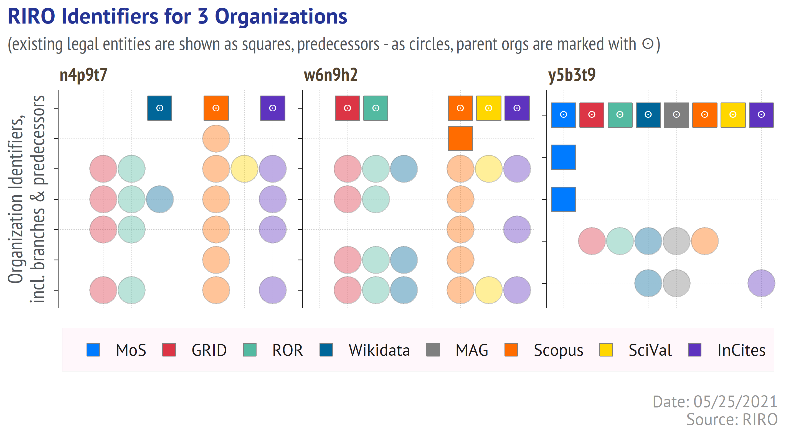
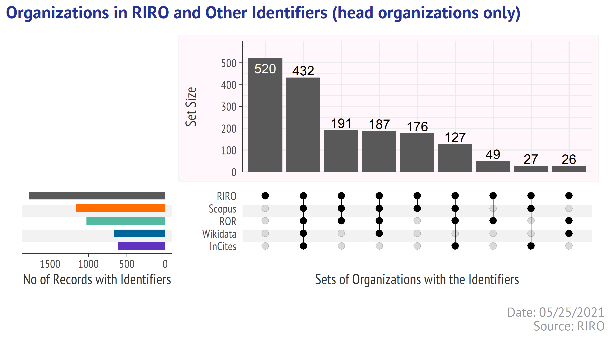

With Web of Science & Scopus, ROR & GRID, Wikidata & Microsoft Academic, ISNI & other providers of the research organization identifiers, is there a need for another one? In this post I am going to answer this question by telling you about RIRO project, launched by me and Ivan Sterligov today. You will see what RORI is, how to get the data, and what value it can provide for the bibliometric research.
RIRO is a public, open, and autonomous project, designed to link the numerous identifiers of the Russian organizations to the existing legal entities.
In its current form RIRO v.1.0 is a set of tables linking the organization identifiers and profiles provided by ROR, GRID, Wikidata, Microsoft Academic, Scopus, SciVal, Web of Science, InCites to the Russian legal entities.
The RIRO tables are available at Zenodo RIRO community: https://zenodo.org/communities/riro/.
The code & examples of use will be shared via GitHub: https://github.com/OpenRIRO.
The news & related information will be updated at web site.
The databases mentioned above have assigned the identifiers to the organizations and put some efforts into curation process, but none of them is confident when it comes to:
covering the small, less prominent organizations (terra incognita)
updating the account reorganizations (what government can resist to it?)
As a result, the identifiers provided by the international services suffer from a patchy coverage and have a limited value for the research assessment and scientometric analysis.
With RIRO we aim to:
create, update, and share a public dataset of the organization identifiers that reflects not only their current statuses, but also their recent (at least) transformations;
asssess how complete is a representation of the Russian organizations in the international registries;
attract the researh community’s attention to the new information services and its features.
As RORI is about research, any organization that appears in the affiliations texts of the scientific publications is a good candidate for RORI. And yet some organizations have been prioritized for v.1.0, those are:
state (federal/regonal) organizations doing fundamental or applied research (research centres, scientific institutes, universities, large clinical centers or hospitals, reserves, museums, etc.);
private organizations (mostly universities).
We have not (even) reviewed the entities associated with the Russian state corporations (RosAtom, RosSpace, RosTech) and the military ones.
The RIRO dataset v.1.0 is a set of CSV tables, having a primary key named code, so one can easily join the tables or build a database.
The CSV tables can be downloaded from Zenodo community, via OAI-PMH Harvesting API or by using REST API.
Below I demonstrate how to download the dataset using zen4R package. This will require of you to do the following actions:
Install [zen4R] package (https://github.com/eblondel/zen4R))
Register at Zenodo
Obtain a token here
# initialize a session
zenodo <- ZenodoManager$new(token = your_zenodo_token, logger = "INFO")
# request the Concept ID (more info -> https://help.zenodo.org/#versioning)
my_rec <- zenodo$getRecordByConceptId("4775290")
# get the list of files with names and URLs
files <- my_rec$files %>% map_df(~.x %>% flatten()) %>% select(filename, filesize, download)
# if you set a folder named RIRO_tables for files, download them with
walk2(files$download, paste0(dir, files$filename),
~download.file(url =.x, destfile = .y))
# At https://help.zenodo.org/#versioning Zenodo says that:
# Currently the Concept DOI resolves to the landing page of the latest version of your record.
# This is not fully correct, and in the future we will change this to create a landing page
# specifically representing the concept behind the record and all of its versions.
# so one day we may have to retrieve the latest DOI my_rec$getLastDOI() or smth else
Let’s see what we have downloaded.
riro_files <- list.files(dir, full.names = TRUE)
riro_files_info <- riro_files %>% file.info() %>% select(size)
riro_files_info
size
D://RIRO_tables/v.1.0_table_01_basic.csv 3156243
D://RIRO_tables/v.1.0_table_02_geo.csv 1819735
D://RIRO_tables/v.1.0_table_03_hierarchy.csv 191991
D://RIRO_tables/v.1.0_table_04_ror.csv 468079
D://RIRO_tables/v.1.0_table_05_wiki.csv 758197
D://RIRO_tables/v.1.0_table_06_scopus.csv 361781
D://RIRO_tables/v.1.0_table_07_mag.csv 14716
D://RIRO_tables/v.1.0_table_08_incites.csv 75484
D://RIRO_tables/v.1.0_table_09_scival.csv 24105
D://RIRO_tables/v.1.0_table_10_monitoring.csv 17944
D://RIRO_tables/v.1.0_table_11_wos_names.csv 354958There are 11 files with an approx. total size 6.9 MB.
Below are the parts of each table corresponding to the 3 organizations:
I selected these organizations as they came through a chain of reorganizations in the last 10 years.
Table 1 comprises the basic organization details - OGRN (Primary State Registration Number), INN (Taxpayer Identification Number), KPP (Tax Registration Reason Code), full & short names, status {active, liquidated, in reorganization process}, and the branch type {head or branch}.
A table below lists the legal entities found by OGRN and their branches (the branch organization and its head entity share same OGRN and INN). To save some space a column with the short names column is not included.
t1 <- riro_files[1] %>% read_csv(col_types = cols(.default = col_character()))
# filtering data for 3 organizations by OGRN
test_group <- t1 %>% filter(ogrn %in% c("1021100511332", "1037739552740", "1027000861568"))
test_group %>% select(code, level, status, name_full, ogrn, inn, kpp) %>%
datatable(rownames = FALSE, filter = "none", escape = FALSE, class = "row-border",
options = list(columnDefs = list(list(width = '650px', targets = c(3)))))
Each row has its unique “code” which serves as a primary key for all the RIRO tables.
Table 2 comprises the full address and its separate parts (in Russian), accompanied with the geocode, geo coordinates and time zone. Table 2 is the only table in RIRO that corresponds 1:1 to Table 1 via “code”. The other tables can have few rows for unique code.
This is a very important table, as it links the parent organizations not only to its existing branches, but also to the predecessors (for convenience, in this document both will be referred as “children accounts”).
Table 3 does not pretend to be complete for few reasons:
the list includes only the last predecessors of the current organizations, so there is no historical perspective from 2000s or from USSR.
some organizations have many branch offices (e.g. hospitals), but information about their hierarchy has little or no value from research assessment perspective. Therefore, for some organizations RIRO does not show the branches. The organizations including the branches are mainly the federal organizations (subdued to the ministries and the federal agencies).
The “child_code” is a code for the children account, the values in the “relation” column reflect a nature of their subordination (it can be a branch or a predecessor).
t3 <- riro_files[3] %>% read_csv(col_types = cols(.default = col_character()))
full_test <- t3 %>% filter(code %in% test_group$code) %>% arrange(desc(code)) %>%
mutate(relation = ifelse(relation == "Филиал", "Branch","Predecessor"))
full_test %>% datatable(rownames = FALSE, filter = "none", escape = FALSE, class = "row-border",
options = list(autoWidth = FALSE,
columnDefs = list(list(className = 'dt-center', targets = c(0:2)))))
Thus, using a list of OGRNs for 3 selected organizations, we extracted from Table 1 6 entities with unique codes (head & branch organizations), further used to retrieve a list of all the predecessors. As a result we have build a list of 42 entities with unique code values.
Now we can see how many branches & predecessors exist for 3 selected orgs.
hierarchy %>% count(parent_code, relation) %>%
pivot_wider(names_from = relation,
values_from = n, values_fill = 0) %>%
select(parent_code, Parent_Org, Branch, Predecessor) %>%
datatable(rownames = FALSE, filter = "none",
escape = FALSE, class = "row-border",
options = list(autoWidth = FALSE,
columnDefs = list(list(className = 'dt-center',
targets = c(0:3)))))
We will use this hierarchy to gather the matched identifiers from other RIRO tables (see below).
Research Organizations Registry (ROR) is an international project launched in 2019 with an ambitious goal to create a public ORCID-like registry for the research organizations. It inherits a lot from GRID (Global Research Identifier Database) and (I guess) from Wikidata. The ROR organization info can be downloaded as a JSON dump or retrieved via API.
Table 4 contains not all the Russian records from ROR, but only those that we matched to the organizations present in RORI.
t4 <- riro_files[4] %>% read_csv(col_types = cols(.default = col_character()))
hierarchy %>% inner_join(t4, by = "code") %>%
arrange(parent_code) %>% select(-parent_code, - relation, -ror_isni) %>%
datatable(rownames = FALSE, filter = "none",
escape = FALSE, class = "row-border",
options = list(columnDefs = list(
list(width = '250px', targets = c(3:4)),
list(width = '350px', targets = c(5)),
list(width = '450px', targets = c(8)))))
The column “Relationships” have the composite values of following structure:
label:xxxx|type:yyyyyy|id:https://ror.org/zzzzz,
with 3 units (label, type, id) for the relative (according to ROR) organizations.
But in cases like our example such references can be misleading! According to ROR the research institutes of the Komi Federal Research Center have different parents:
So for a single organization ROR shows 4 accounts subordinating to three different RAS structures.
The actual truth is that the found 4 research institutes of the Komi Federal Research Center ceased to exist as legal entities 3 years ago, they were merged into one federal research center in May 2018.
Using the Table 3, one can gather the related identifiers and qualify them as corresponding to a branch or a predecessor.
WikiData is a public repository of structured data originating from multiple sources. Some sources are more or less consistent (like CrossRef or ISSN), but there’s also a lot of Wikidata records that are created and modified by people. As a result, even though Wikidata offers a pre-defined templates for the universities or research organizations, Wikidata profiles have a lot of unpopulated fields.
The table 5 comprises a list of fields found in the Wikidata profiles for the organizations, but not a full copy. Moreover, Table 5 include only those Russian research organizations that match to the organizations in RIRO.
t5 <- riro_files[5] %>% read_csv(col_types = cols(.default = col_character()))
hierarchy %>% inner_join(t5, by = "code") %>%
arrange(parent_code) %>%
select(-parent_code, - relation, -wd_item) %>%
mutate_at(c("wikipedia_eng", "wikipedia_rus", "wd_itemaltlabel", "wd_altlabel"),
~ifelse(is.na(.x),.x, paste0(substr(.x,1,40),"...")))%>%
datatable(rownames = FALSE, filter = "none", escape = FALSE, class = "row-border",
options = list(columnDefs = list(
list(width = '250px', targets = c(2:4)),
list(width = '150px', targets = c(6:9)))))
Scopus is a (one of leading) citation index accumulating the metadata from 20k+ journal titles, selected conference sources, and some academic book titles. Table 6 lists the Scopus affiliation profiles matched to the organizations in RIRO, and also a number of publications under Scopus affiliation profile (on a data of request, April 2021).
Scopus Affiliation IDs can be used for search queries via online UI or the API-service. The latter has few wrappers for python and R that make working with API more comfortable.
Please note that matching the Scopus affiliation profiles to RIRO organizations is based on the affiliation name and location. It does not guarantee that all the publications in the profile are assigned to it correctly. More details on how to edit the affiliation profiles in Scopus can be found on Elsevier web site.
t6 <- riro_files[6] %>% read_csv(col_types = cols(.default = col_character()))
hierarchy %>% inner_join(t6, by = "code") %>%
arrange(parent_code) %>% select(-parent_code, - relation) %>%
datatable(rownames = FALSE, filter = "none", escape = FALSE, class = "row-border",
options = list(columnDefs = list(
list(className = 'dt-center', targets = c(0,6)),
list(width = '350px', targets = c(2:3)))))
Microsoft Academic Graph (MAG) is a database created based on the information extracted with Bing-parsers from the publisher web sites and PDF files details). This approach is different from the one utilized by Web of Science and Scopus that receive a large part of information for indexation directly from the publishers.
In recent years MAG has become a source of information for many novel solutions like Lens, Semantic Scholar, Open Academic Graph, Unsub.
Even though the last news about MAG shocked us too, we decided to include the MAG Organization IDs into RORI. Few international companies committed to launching a new tool that may substitute MAG:
ANNOUNCING: We’re building a replacement for Microsoft Academic Graph. https://t.co/GXelkpt6Zc
— Our Research (@our_research) May 8, 2021
Thanks to @MSFTResearch for providing the Microsoft Academic Graph (MAG). We’ve been working with MSR and MAG since 2018, and we’ve been collaborating on this transition for some time. 1/3https://t.co/7aHTLio8uK
— Semantic Scholar (@SemanticScholar) May 11, 2021
Table 7 lists just the MAG organization IDs and names agains the RORI codes.
t7 <- riro_files[7] %>% read_csv(col_types = cols(.default = col_character()))
hierarchy %>% inner_join(t7, by = "code") %>%
arrange(parent_code) %>% select(-parent_code, - relation) %>%
datatable(rownames = FALSE, filter = "none", escape = FALSE, class = "row-border",
options = list(autoWidth = FALSE,
columnDefs = list(
list(className = 'dt-center', targets = c(0:1)),
list(width = '450px', targets = c(2)))))
InCites is an analytical solution build over Web of Science Core Collection. It allows to export the records, so the matched names can be used for further analysis.
The table 8 lists the official organization names in InCite and Web of Science Core Collection against the RORI codes.
t8 <- riro_files[8] %>% read_csv(col_types = cols(.default = col_character()))
hierarchy %>% inner_join(t8, by = "code") %>%
arrange(parent_code) %>% select(-parent_code, - relation) %>%
datatable(rownames = FALSE, filter = "none", escape = FALSE, class = "row-border",
options = list(autoWidth = FALSE,
columnDefs = list(
list(className = 'dt-center', targets = c(0,3)),
list(width = '500px', targets = c(1:2)))))
SciVal is an analytical tool build over Scopus. Some Russian organizations have an access to SciVal API and could use the IDs matched against the RORI codes in the table 9.
t9 <- riro_files[9] %>% read_csv(col_types = cols(.default = col_character()))
hierarchy %>% inner_join(t9, by = "code") %>%
arrange(parent_code) %>% select(-parent_code, - relation) %>%
datatable(rownames = FALSE, filter = "none", escape = FALSE, class = "row-border",
options = list(autoWidth = FALSE,
columnDefs = list(
list(className = 'dt-center', targets = c(0:1)),
list(width = '450px', targets = c(2)))))
This system governed by the Russian Ministry of Science & Higher Education, collects the various statistical reports from all Russian higher education institutions (excluding some schools under the Ministry of Defence and alike). Such reports contain a lot of useful information - from financial to enrollment data.
Table 10 lists the IDs that corresponds to the university’s web page on the portal, matched to the RORI codes.
t10 <- riro_files[10] %>% read_csv(col_types = cols(.default = col_character()))
hierarchy %>% inner_join(t10, by = "code") %>%
arrange(parent_code) %>% select(-parent_code, - relation) %>%
datatable(rownames = FALSE, filter = "none", escape = FALSE, class = "row-border",
options = list(autoWidth = FALSE,
columnDefs = list(list(className = 'dt-center',
targets = c(0:1)))))
Web of Science is by far the world’s oldest and most prominent citation index. At this moment Web of Science does not provide the organization IDs that could be used for search or data retrieval, but the search results have the orgaization names. The table 11 lists almost 4000 such names matched to the organizations in RIRO. This is not a complete list of known affiliation names for the Russian research organizations, but we hope to adjust this table in future releases of RIRO.
t11 <- riro_files[11] %>% read_csv(col_types = cols(.default = col_character()))
hierarchy %>% inner_join(t11, by = "code") %>%
arrange(parent_code) %>% select(-parent_code, - relation) %>%
datatable(rownames = FALSE, filter = "none",
escape = FALSE, class = "row-border",
options = list(autoWidth = FALSE,
columnDefs = list(
list(className = 'dt-center', targets = c(0)),
list(width = '500px', targets = c(1,3)))))
Now, as we have glanced at the identifiers found in each table for 3 selected organizations, we are ready for a wider picture.
An illustration below shows the identifiers (ROR, GRID, Scopus Affiliation ID, InCites ID, MAG, Wikidata, 1-Monitoring) matched to parent organizations, branches and predecessors - each organization in a separate section. The identifiers are placed along X-axis (by organization). The entities (RORI records) are placed along Y-axis – the existing organizations are shown as squares (the parent organizations are marked with a special sign), the predecessors as circles.
knitr::include_graphics(chart_filename)

This picture is not an example of clarity, I admit, so let me explain it more thoroughly. The identifiers for each organization are present in a separacte section (from left to right). Each section has its own number of horizontal rows corresponding to the parent organization, branches and predecessors (from top to bottom). Marked as squares are the existing organizations - either a parent one (also marked with a sign, on top) or the branches (under the parent). Marked as circles (with less saturated colours) are the identifiers corresponding to the predecessors (liquidated organizations).
Or in a more plain language - every circle is an organization identifier that corresponds to a predecessor, not to existing legal entity.
An UpSet diagram below shows the sets of organizations listen in RIRO (v.1.0) and matched to the various identifiers. Only the head and active (existing) organizations are counted here, so the identifiers referring to the branches or to the predecessors (liquidated via acquisition), are not counted.
knitr::include_graphics(chart_filename2)

RIRO v.1.0 lists 1774 existing parent organizations. Many of those have no external identifiers, but (as previous picture proved) may have a lot of identifiers corresponding to the branches or predecessors.
RIRO does not copy all the attributes linked to the records in the sources. We selected only the most useful (to our opinion) fields. In future RIRO releases we may add more fields.
The data in the tables 4-11 is the same as in the original sources - we have not changed the original records.
Some tables share the common fields. For example, ROR (table 4) has a column Wikidata, and Wikidata (table 5) has a column ROR. We did not chang or check those links, they are kept as they are present in the original sources, but renamed to avoid confusion (added a prefix referring to the source - ror_wikidata, wd_ror, etc.
Matching the identifiers to the organizations was made based on available information (name, location) - we have not checked if the data asssociated with the identifiers (in the source databases) is correctly assigned to the organizations.
So far RIRO is developed by only 2 persons - me and Ivan Sterligov orcid - so we decided to start with a google form (in Russian) with 5 pre-defined scenarios of change requests:
The future RORI releases will include a log of made changes.
Allaire J, Xie Y, McPherson J, Luraschi J, Ushey K, Atkins A, Wickham H, Cheng J, Chang W, Iannone R (2021). rmarkdown: Dynamic Documents for R. R package version 2.7, <URL: https://github.com/rstudio/rmarkdown>.
Blondel E (2021). zen4R: Interface to ‘Zenodo’ REST API. R package version 0.4-3, <URL: https://github.com/eblondel/zen4R>.
Chang, W (2014). extrafont: Tools for using fonts. R package version 0.17, <URL: https://CRAN.R-project.org/package=extrafont>.
Henry L, Wickham H (2020). purrr: Functional Programming Tools. R package version 0.3.4, <URL: https://CRAN.R-project.org/package=purrr>.
Krassowski M (2020). “ComplexUpset.” doi: 10.5281/zenodo.3700590 (URL: https://doi.org/10.5281/zenodo.3700590), <URL: https://doi.org/10.5281/zenodo.3700590>.
Lex A, Gehlenborg N, Strobelt H, Vuillemot R, Pfister H (2014). “UpSet: Visualization of Intersecting Sets,.” IEEE Transactions on Visualization and Computer Graphics, 20(12), 1983–1992. doi: 10.1109/TVCG.2014.2346248 (URL: https://doi.org/10.1109/TVCG.2014.2346248), <URL: https://doi.org/10.1109/TVCG.2014.2346248>.
Wickham H (2020). tidyr: Tidy Messy Data. R package version 1.1.2, <URL: https://CRAN.R-project.org/package=tidyr>.
Wickham H (2016). ggplot2: Elegant Graphics for Data Analysis. Springer-Verlag New York. ISBN 978-3-319-24277-4, <URL: https://ggplot2.tidyverse.org>.
Wickham H (2019). stringr: Simple, Consistent Wrappers for Common String Operations. R package version 1.4.0, <URL: https://CRAN.R-project.org/package=stringr>.
Wickham H, Francois R, Henry L, Muller K (2021). dplyr: A Grammar of Data Manipulation. R package version 1.0.3, <URL: https://CRAN.R-project.org/package=dplyr>.
Wickham H, Hester J (2020). readr: Read Rectangular Text Data. R package version 1.4.0, <URL: https://CRAN.R-project.org/package=readr>.
Wickham H, Seidel D (2020). scales: Scale Functions for Visualization. R package version 1.1.1, <URL: https://CRAN.R-project.org/package=scales>.
Xie Y (2020). knitr: A General-Purpose Package for Dynamic Report Generation in R. R package version 1.30, <URL: https://yihui.org/knitr/>.
Xie Y (2015). Dynamic Documents with R and knitr, 2nd edition. Chapman and Hall/CRC, Boca Raton, Florida. ISBN 978-1498716963, <URL: https://yihui.org/knitr/>.
Xie Y (2014). “knitr: A Comprehensive Tool for Reproducible Research in R.” In Stodden V, Leisch F, Peng RD (eds.), Implementing Reproducible Computational Research. Chapman and Hall/CRC. ISBN 978-1466561595, <URL: http://www.crcpress.com/product/isbn/9781466561595>.
Xie Y, Allaire J, Grolemund G (2018). R Markdown: The Definitive Guide. Chapman and Hall/CRC, Boca Raton, Florida. ISBN 9781138359338, <URL: https://bookdown.org/yihui/rmarkdown>.
Xie Y, Cheng J, Tan X (2021). DT: A Wrapper of the JavaScript Library ‘DataTables’. R package version 0.17, <URL: https://CRAN.R-project.org/package=DT>.
Xie Y, Dervieux C, Riederer E (2020). R Markdown Cookbook. Chapman and Hall/CRC, Boca Raton, Florida. ISBN 9780367563837, <URL: https://bookdown.org/yihui/rmarkdown-cookbook>.
Text and figures are licensed under Creative Commons Attribution CC BY 4.0. The figures that have been reused from other sources don't fall under this license and can be recognized by a note in their caption: "Figure from ...".
For attribution, please cite this work as
Lutai & Sterligov (2021, May 25). ConviviaR Tools: RIRO - Russian Index of the Research Organizations. Retrieved from https://dwayzer.netlify.app/posts/2021-05-24-riro/
BibTeX citation
@misc{lutai2021riro,
author = {Lutai, Aleksei and Sterligov, Ivan},
title = {ConviviaR Tools: RIRO - Russian Index of the Research Organizations},
url = {https://dwayzer.netlify.app/posts/2021-05-24-riro/},
year = {2021}
}